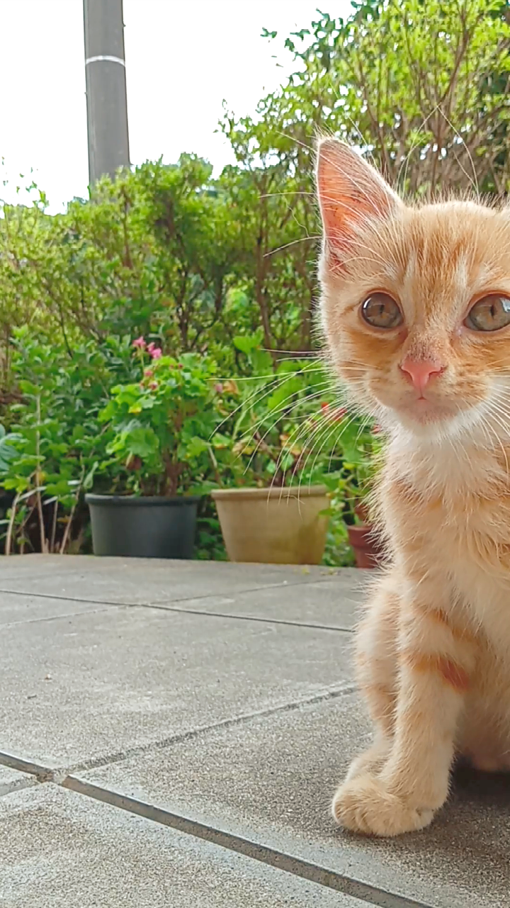

ラグドールRagdoll
「ぬいぐるみ」という名の通り、抱っこされるのが大好きな穏やかな性格。青い瞳とふわふわの被毛が特徴的な、非常に人気のある大型種です。
| 気質 | 穏やか、従順、人懐っこい |
|---|---|
| 毛種 | 長毛種 |
| 毛質 | シルクのように柔らかく、もつれにくい |
| 毛色 | シール、ブルー、チョコ、ライラックなど |
| 模様 | ポイント、ミテッド、バイカラー |
| 体型 | ロング＆サブスタンシャル（大型でがっしり） |
| 体重 | 4.5kg 〜 9.0kg |
| 初心者向け | ★★★★★（非常に飼いやすい） |
| 性格・特性 | 鳴き声が小さく、攻撃性が低い。子供や他のペットとも仲良くできる。 |
| 平均寿命 | 12歳 〜 15歳 |